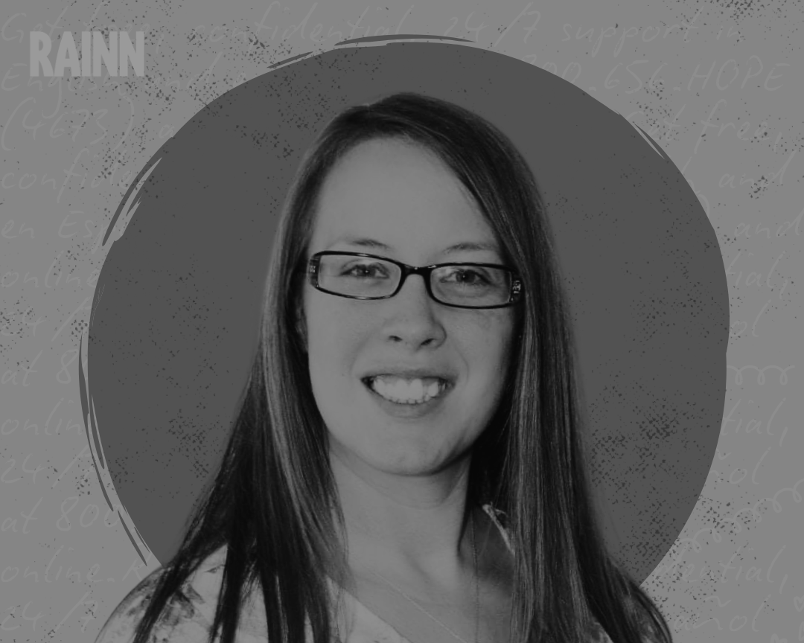

|  |
Nicole’s story is one of incredible resilience and transformation. In 2011, while working as a therapist, she was violently assaulted by a gang after helping one of her clients escape an abusive relationship. The attack left Nicole severely injured, and the gang members threatened her and her loved ones, forcing her into hiding. With the support of her best friend, Nicole fled Pittsburgh in 2012, moving to San Antonio, Texas, to start over.
Nicole’s recovery was slow, but she eventually found support through RAINN (the Rape, Abuse & Incest National Network) and therapy. Although she could no longer return to her previous career in therapy due to the trauma, she continued her passion for social work by helping other survivors, including working with at-risk youth and moderating a survivor support group.
Over time, Nicole’s life began to flourish. She married her best friend, and together they became foster parents and raised a daughter. Nicole found joy in helping others, offering hope to survivors, and living a life filled with love and purpose. Despite the scars of her past, Nicole now shares her story to inspire others, proving that healing and happiness are possible after trauma. |